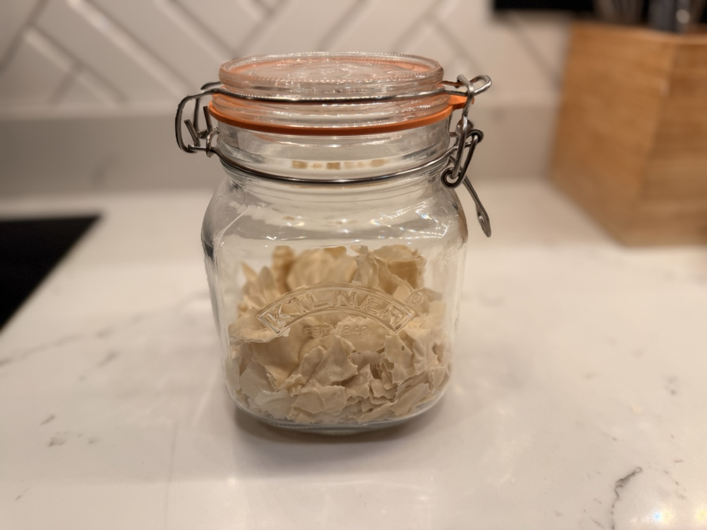
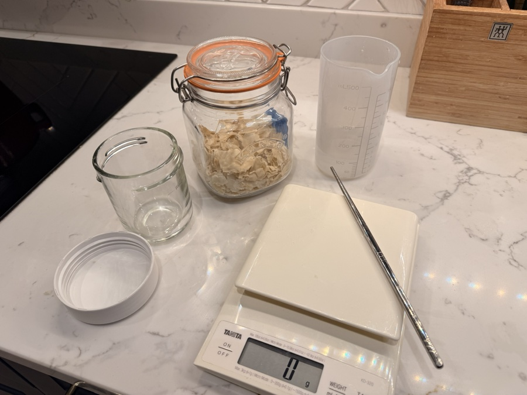
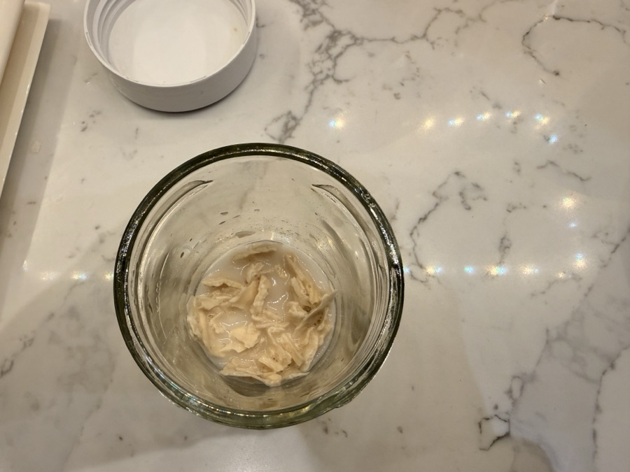
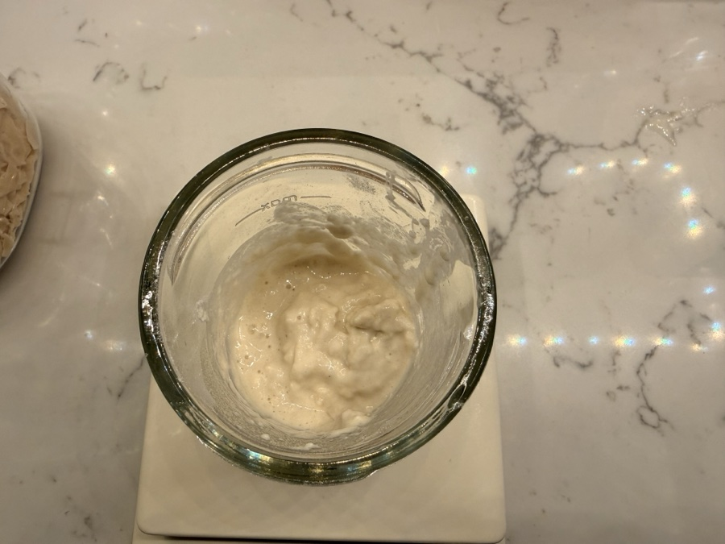
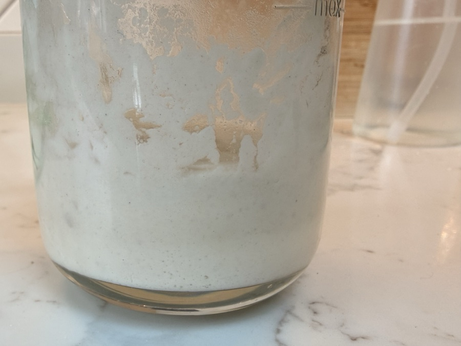
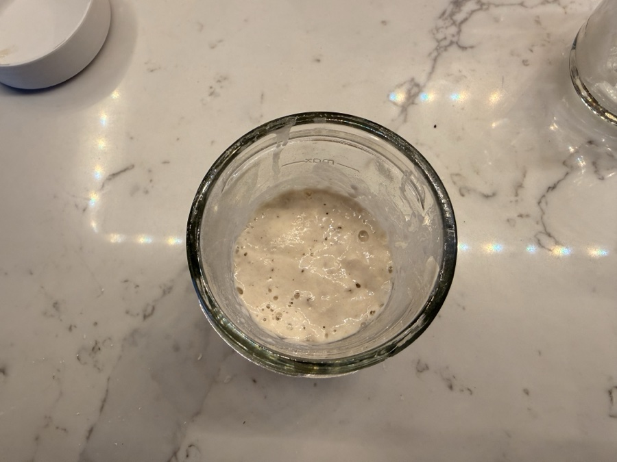

Welcome to the Basic Loaf Family!
First of all, thank you for choosing my sourdough starter. You've just skipped the most challenging 14 days of the sourdough journey! This starter is over 5 years old, used daily to bake for Will's family, and is incredibly resilient and reliable.
Whether you received a fresh starter or a packet of dried flakes, find your version below. Either way, you're just a few days away from your first loaf.
If You Received Dried Flakes

Your starter arrives as 30g of crisp, paper-thin flakes - tip the whole packet in, there's no need to hold any back. Bringing it back to life is simple, it just takes a bit of patience. All you need is strong white bread flour and lukewarm water.

-
Day 1 - The Awakening: In a clean jar, mix 30g of the flakes with
30g of lukewarm water. Leave it for about an hour so the flakes can soften - it will look
exactly like soggy cornflakes at this stage, which is about as glamorous as it sounds. Once it's broken down
into a rough paste, stir in 30g of flour. Cover loosely and leave in a warm spot for
24 hours.

The soggy cornflakes stage - perfectly normal. 
After the hour is up it should be a rough paste like this - time to stir in the flour. -
Day 2 - First Signs of Life: You might see a couple of tiny bubbles today - that's exactly
what we want. Don't discard anything yet. Just stir in 50g flour and 50g lukewarm
water, give it a good mix, and leave for another 24 hours.

Bubbles starting to form around 12-14 hours in - exactly what we want to see. -
Day 3 - Back in Business: It should be smelling pleasantly tangy by now. Discard about half
of what's in the jar, then feed it again with 50g flour and 50g water.
Within a few hours it should be bubbly, active, and starting to double in size.

By Day 3 the bubbles are really picking up - your starter is waking up.
Once it's reliably doubling within 4-8 hours of a feed, it has officially moved in! If it needs another day or two, just repeat the Day 3 feed until it gets there - dried starters can sometimes take a little longer depending on the temperature in your kitchen. Check out the Starter Guide for long-term feeding and storage from here.
If You Collected Your Live Starter in Person
Since you picked this up directly, the starter is happy and active - you're basically ready to go. It just needs one feed before its first bake.
(Collected after 4pm? There's a good chance I've already fed it for you, so you can skip straight to the timing below.)
How to feed it
Pour 70g of lukewarm water into the jar and give it a swirl to loosen everything. Then stir in 70g of strong white bread flour and mix until you get a thick paste - like peanut butter. That's it. This is the Scrapings Method you'll use going forward too, so you're already learning the routine.
When to feed it
- Baking tomorrow? Feed it this evening around 5-6pm. It will peak overnight and be ready to use first thing in the morning.
- Not baking yet? Give it a feed, then pop the jar in the fridge once it has had an hour or two at room temperature. Take it out the day before you want to bake and feed it again - it will be raring to go the next morning.
When you do bake, the recipe uses around 120g of starter. Whatever is left clinging to the jar becomes the base for your next feed - no waste, no measuring out a discard portion, just top it back up with 70g water and 70g flour when you're ready.
If You Received Your Live Starter by Post
Being in an envelope for 24-48 hours is a journey! Your starter might arrive looking a bit thin or smelling quite "vinegary" and intense. Don't worry - it's just hungry and tired.
- Feed Immediately: Treat your starter to a fresh meal. Snip the end of the zip lock bag like a piping back and squeeze it into a clear, sterilized jar. Give it a "1:1:1" feed (50g starter, 50g lukewarm water, 50g strong white bread flour).
- The Sensory Check: Mix it into a thick, sticky paste (like thick peanut butter). Within a few hours, you should smell a wonderful transformation: from sharp vinegar to a pleasant, tangy sweetness. (See my Feeding Guide for more).
- The Double Check: I recommend feeding it twice at room temperature before your first bake. You want to see it reliably doubling in volume and becoming light and airy, like a marshmallow.
- Storage: Once it's bubbly and active, it has officially moved in! You can move it to the fridge and follow the standard maintenance in the Starter Guide.
A Few Tips for My Specific Starter
- It Loves Warmth: This culture is used to a cozy kitchen. If your house is cool, use lukewarm water (35°C) for feedings to keep it moving.
- Don't Overthink It: Sourdough is resilient. If you forget a feed, just give it some flour and water and it will almost always bounce back.
- Ready to Bake? Once your starter is bubbly and active, head over to The Recipe to start your first Basic Loaf.
If you have any issues or want to show off your first loaf, tag me on Instagram @basicloafsourdough!
Once your starter is active, take a small spoonful (10g) and put it in a separate small jar in the fridge. Don't feed it, just leave it there. This is your "insurance policy" in case anything happens to your main jar!
New Starter FAQs
Is the smell normal?
Yes! It might smell like vinegar, yeast, or even a bit fruity. This is completely normal for a mature culture. Only worry if you see fuzzy mould.
What if it looks liquid or thin?
Temperature changes during travel can make the starter go thin. Simply feed it with equal parts flour and water (by weight) to bring it back to a thick paste consistency.
When can I bake?
Once your starter is reliably doubling in size within 4-8 hours after a feed, you are ready to bake! Check out The Recipe to get started.
My dried flakes aren't doing much by Day 3 - is that normal?
Fairly common, especially in a cooler kitchen. Just repeat the Day 3 feed (discard half, add 50g flour and 50g water) until you see reliable bubbling and doubling - some dried starters take 4-5 days. The biggest factor is warmth, so try finding a warmer spot if it's being sluggish.
Ready to make your first loaf?
Head over to the step-by-step master recipe and let's get baking!
Go to The RecipeNeed help? I'm more than happy to help you on your sourdough journey. Reach out to me any time on Instagram @basicloafsourdough.